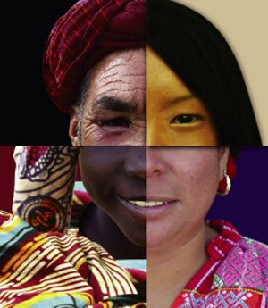

Término en Wikipedia
Término en Wikipedia
 El término cultura, que proviene del latín cultus, hace referencia al cultivo del espíritu humano y de las facultades intelectuales del hombre. Su definición ha ido mutando a lo largo de la historia: desde la época del Iluminismo, la cultura ha sido asociada a la civilización y al progreso.
En general, la cultura es una especie de tejido social que abarca las distintas formas y expresiones de una sociedad determinada. Por lo tanto, las costumbres, las prácticas, las maneras de ser, los rituales, los tipos de vestimenta y las normas de comportamiento son aspectos incluidos en la cultura.
Otra definición establece que la cultura es el conjunto de informaciones y habilidades que posee un individuo. Para la UNESCO, la cultura permite al ser humano la capacidad de reflexión sobre sí mismo: a través de ella, el hombre discierne valores y busca nuevas significaciones.
Según el enfoque analítico que se siga, la cultura puede ser clasificada y definida de diversas maneras. Por ejemplo, hay estudiosos que han dividido a la cultura en tópica (incluye una lista de categorías), histórica (la cultura como herencia social), mental (complejo de ideas y hábitos), estructural (símbolos pautados e interrelacionados) y simbólica (significados asignados en forma arbitraria que son compartidos por una sociedad).
La cultura también puede diferenciarse según su grado de desarrollo: primitiva (aquellas culturas con escaso desarrollo técnico y que no tienden a la innovación), civilizada (se actualiza mediante la producción de nuevos elementos), pre-alfabeta (no ha incorporado la escritura) y alfabeta (utiliza tanto el lengua escrito como el oral).
Por último, cabe destacar que en las sociedades capitalistas modernas existe una industria cultural, con un mercado donde se ofrecen bienes culturales sujetos a las leyes de la oferta y la demanda de la economía.